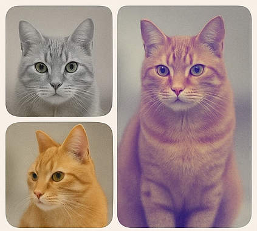

About the NerDS Lab
The Neural Data Science (NerDS) Lab, led by Dr. Eva Dyer at UPenn, develops data-centric machine learning methods to understand complex biological systems. Our interdisciplinary research integrates neuroscience, AI, and representation learning to decode neural computation, interpret behavior, and uncover general principles of biological intelligence.
 |
🧠 Understanding the Brain Through AIWe create scalable models that decode brain activity across tasks, cell types, and animals. Our foundation models for neuroscience support transfer across sessions and contexts. |
|  |
🔁 Self-Supervised and Contrastive LearningWe apply self-supervised methods to reveal hidden patterns in neural and behavioral data. Our models learn structured representations without labels, discovering multiscale behavior and neural motifs. |
 |
🌍 Domain Adaptation and Representation AlignmentWe design representation alignment methods that adapt across devices and conditions in time series data. Our channel-selective and Sinkhorn-based techniques improve model robustness and transfer. |
 |
🧬 Mapping Cell Types from ActivityWe build classifiers that use only neural activity to predict cell types and brain regions. Our contrastive approaches generalize across mice and modalities, bridging function and transcriptomics. |
 |
📊 Graph LearningOur lab advances graph neural network methods to model diverse graph datasets. We develop transformers and graph augmentation techniques for scalable and transferable graph learning.
Featured Paper:
|